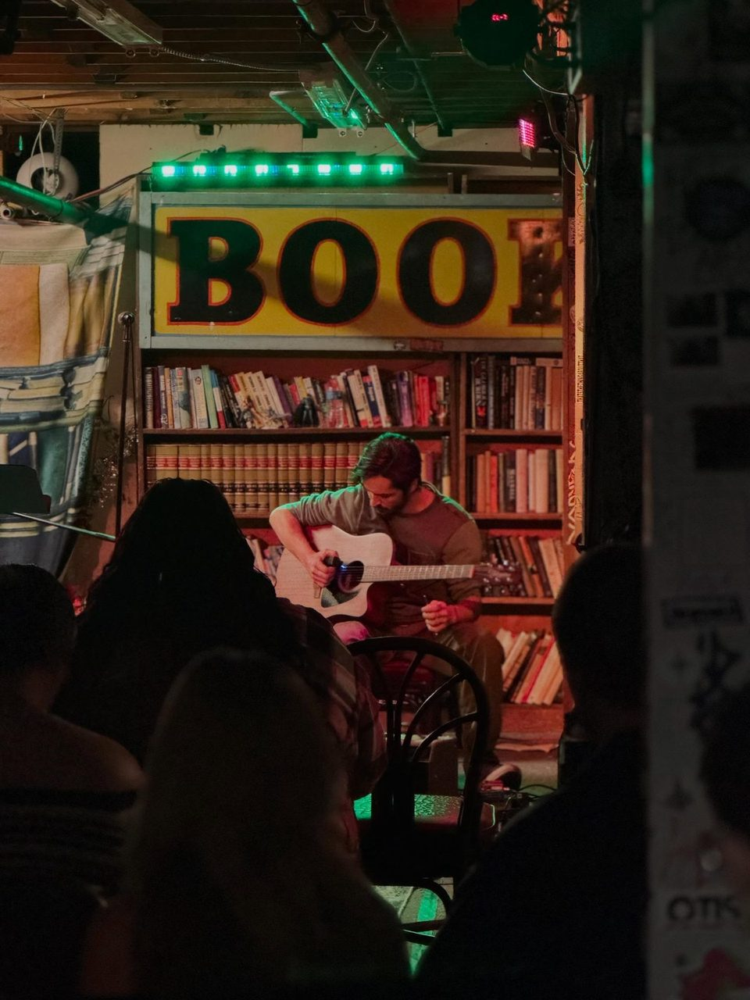

Rails End Open Jam (Liquor Pie Lizards)
Rails End Beer CompanyBroomfield
1st & 3rd Monday
6:00 PM to 9:00 PM
- House band Yes
- Signup
- no signup required; bring your instrument
- Host
- Liquor Pie Lizards
11625 Reed Ct, Unit B, Broomfield, CO 80020
Open jams take any player and any genre. The host builds bands from whoever signed up, so the music changes with who shows up each week.
Schedules change. Confirm with the venue or host before you go.
Bands play whatever the people on stage can agree on, like a blues shuffle, four-chord rock, a funk vamp, a country two-step, or a song somebody brought. Hosts steer groups toward tunes everyone on stage can fake.
Open jams almost always use a list where you write your name and your instrument. The host mixes groups so each one has drums, bass and someone on chords, then works down the list in rounds.
Each group plays two or three tunes. With the host's help, the group agrees on something simple in a few seconds, and someone counts it in.
Rails End Beer CompanyBroomfield
1st & 3rd Monday
6:00 PM to 9:00 PM
11625 Reed Ct, Unit B, Broomfield, CO 80020
Swallow Hill Music (Quinlan Cafe)Denver
Mondays, weekly
from 8:00 PM
71 E Yale Ave


The End Lafayette (inside Dog House Music Studios)Lafayette
1st Tuesday of the month
6:30 PM to 8:30 PM
525 Courtney Way, Lafayette, CO 80026


RockabilliesArvada
Tuesdays, weekly
7:00 PM to 10:00 PM
12363 W 64th Ave, Arvada, CO 80004
Lot 46 Music BarEdgewater
Tuesdays, weekly
from 8:00 PM
5302 W 25th Ave, Edgewater, CO 80214
Crazy Mountain TaproomDenver
Wednesdays, weekly
5:00 PM to 8:00 PM
1505 N Ogden St
Sit-N-Bull SaloonIndian Hills
Biweekly (every other Thursday)
from 6:00 PM
5450 S Parmalee Gulch Rd, Indian Hills, CO 80454


Table Public HouseDenver
Sundays, weekly
2:00 PM to 5:00 PM
2190 S Platte River Dr

Mutiny Comics and Coffee (Mutiny Information Cafe)Englewood
Sundays, weekly
6:00 PM to 8:00 PM (jam); slam 8-10 PM; open mic after the slam
3483 S Broadway, Englewood, CO 80113
Musical Life DenverEnglewood
Sundays, weekly
from 7:15 PM
2842 S Broadway, Englewood, CO 80113
Photos belong to the people credited on them. If one is yours and you want it down, tell me and it comes down.
We make you the guitarist a pickup band is glad to see, with keys, numbers and steady time. Guitar lessons
We train your ear for progressions and for locking in with a drummer you don't know. Bass lessons
We build the common feels and practice listening before you play. Drum lessons
We work on reading chord charts, the number system, and playing less. Piano lessons
Inquire about a good teacher for you, and I'll recommend someone if I know one.
Inquire about a good teacher for you, and I'll recommend someone if I know one.
Inquire about a good teacher for you, and I'll recommend someone if I know one.
In a lesson or two before your first jam, we cover the progressions and tunes a mixed stage can agree on, how the signup works, and how a set goes. Once you're my student, I'll help you pick the right jam, and I'll be there.
Book a lesson How a first jam goes
$75 an hour, in your home or on Zoom. You pay after the lesson.